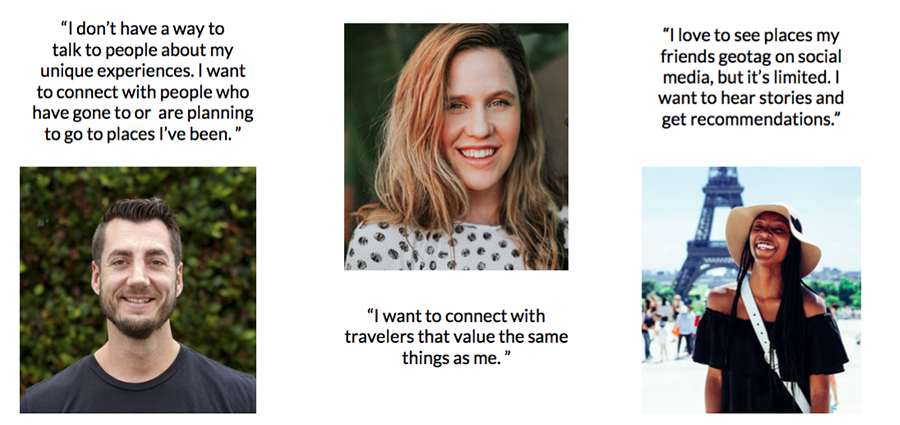
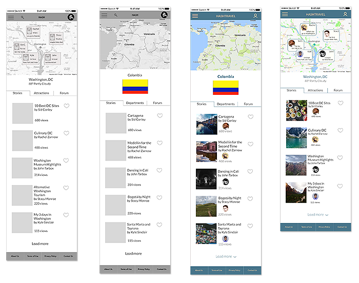

HASHTRAVEL
Web App Redesign • Timeframe: 2 weeks • Role: Co-Designer
HashTravel aims to solve the broader questions of travel: to what country or city should I go, and why? It's not about flights and hotel rooms; it's about a community of people who love travel, telling stories and giving advice to each other.

The Challenge
The task was to redesign the User Experience of HashTravel to better highlight the core functionality. We would create new landing pages, user onboarding that communicated the purpose of HashTravel, and new ways to use maps, which were to be the center of the experience.

Understanding the Business
In a travel tech field that is crowded and fast-growing, what was HashTravel offering and how could we help differentiate it through our work?
There are travel companies that started out answering the big questions about where someone might want to go. Most of those have drifted more towards e-ticketing for airlines and booking hotel rooms. A review of major online travel sites confirmed what the HashTravel founder had suspected: that a crowdsourced community dedicated to discussion and advice about travel and places would be unique on the web.
HashTravel intended to use maps as a center point of their experience. We examined the many versions of travel maps that we found online, looking for ideas to make a travel community site more visual and fun. With new mapping technologies lots of exciting map experiences have become possible. How could we take advantage of this to create map-centered pages that would keep users exploring?

Users
On HashTravel's side what is wanted is a vibrant community of users that produces interesting content. But what do the users really want or need?
HashTravel App already existed, so in this project one we were able to start with some user testing. These early tests of the existing product let us know what was working and what was not. To be able to start with these insights was invaluable.
We needed more users though, so we posted a screener/research survey which received 55 responses. From these we contacted 7 for in-depth interviews about travel.

Our 7 in-depth user interviews were illuminating. Avid travelers told us proudly about their travels and how they lacked a dedicated platform from which to tell their stories and give advice to others. Other travelers were excited to see that advice.
6/7 Users want a way to share their travel experiences with others.7/7 Users want trustworthy travel recommendations.5/7 Users use social media when deciding where to travel.
Interviews with insightful people guided us in our reimagining of HashTravel. To help focus our thinking for the rest of the project we created personas of our primary and secondary users. We decided that our primary user had to be a proud, avid traveler, because content creators will be the most valuable users of the app. The secondary user would be the also-essential casual traveler and seeker of advice and ideas.
Analysis - Narrowing the Focus
Bringing together all of the information we gathered, we created a new structure for HashTravel. Our tools were whiteboards, notebooks, and many Sketch artboards. We were dealing with an app and a user flow of complexity and we needed to make sure that our most important user experience (sharing travel stories) did not get lost in the structure.

Design and Iterations
We worked in successive iterations which we tested with users, gradually refining. Each team member took responsibility for different parts of the user flows, and in the end we brought together all our files and refined them with one aesthetic.

New Features
Landing Page
Our test users had been confused about what kind of site they were landing on. This was unacceptable, so we laid out a new design that communicates the core mission. You can create your own travel map, tell stories, join a community. You can jump-start your travel map by signing up through Facebook. The new design will onboard users faster and get them creating an/or exploring content. 1. First-time users are urged to create their own travel map like the example map that's featured. 2. Facebook signup is prominently featured to encourage users to link HashTravel to their social network. 3. Below the fold, additional clickable features are displayed, including Stories and Community.
Maps
Maps are key to a UI that celebrates exploration. In themselves they tell stories of the lives of single users’ lives, and they also geographically organize the place-based individual stories. A map-based user flow turns the HashTravel UI into an atlas, and users can drill down to regions, countries, and cities, exploring a world rich with stories. 1. Drilling down geographically from the world to cities and countries, users can explore and mark cities they have visited. 2. Once the map is pinned a “write story” button is visible for the user to add their personal story of that place. 3. In the city list below the map the user can place pins for cities he or she has visited or add it to a list of saved locations.
Stories
The stories are the key to the experience. So when the user gets to them they need to be attractive, with a proper balance of text, map, and photos. The new story platform we designed allows and encourages content creators to add all of those elements, and to think of their story as a multimedia blog entry. 1. Map is populated with locations/ keywords entered into the story. 2. The traveler who wrote the story is featured with a name and photo linking to his profile page. 3. The traveler's photos of the location are featured below the map and above the written story.